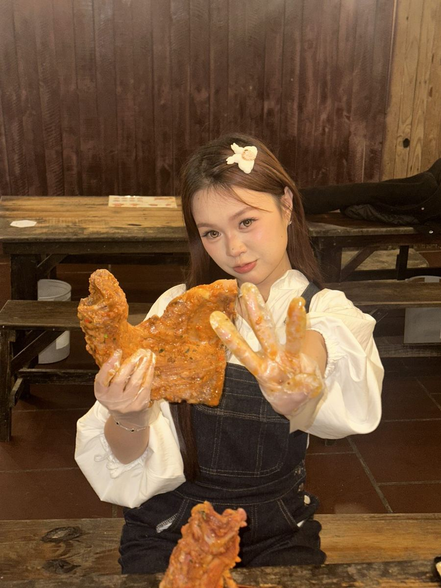

Sườn cay khổng lồ ở Bếp Khói lên bàn nguyên tảng, phủ kín sốt. Cách ăn đúng điệu là đeo găng tay, xé từng miếng, chấm bánh mì vào sốt và ăn xen salad cho dịu vị cay.
4 bước ăn sườn cay khổng lồ
- Đeo găng tay quán đưa kèm, sốt khá nhiều nên đừng ăn tay trần.
- Xé từ mép tảng sườn, mỗi người một miếng vừa ăn.
- Chấm bánh mì vào phần sốt cay đọng dưới đĩa, phần này nhiều người thích nhất.
- Ăn xen salad để vị cay bớt gắt.
Một phần sườn có gì?
| Size | Giá | Đi kèm |
|---|---|---|
| M | 330.000đ | 1 đĩa salad và 2 ổ bánh mì |
| L | 490.000đ | |
| XL | 700.000đ | |
| XXL | 910.000đ |
Mẹo nhỏ
- Bánh mì hết trước sườn thì gọi thêm, 5.000đ một ổ.
- Muốn sốt đậm hơn có thể gọi thêm sốt (30.000đ).
- Khăn lạnh 3.000đ, tiện lau tay sau khi xé.
Chưa chọn cấp cay? Xem bài 3 cấp cay ở Bếp Khói.
Thông tin Bếp Khói
- Địa chỉ: 42 Phan Chu Trinh, Phường Lâm Viên - Đà Lạt
- Giờ mở cửa: 10:30–14:00 và 16:30–22:00 mỗi ngày
- Đặt bàn: 0394 452 784 (gọi hoặc Zalo)